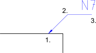

<p>I leader sono frecce che di solito puntano da un'entità di testo a un'altra
entità, come mostrato di seguito. Nell'esempio, l'entità di testo "N7" descrive
una proprietà di una superficie puntandola con una direttrice.
<br />
</p>
